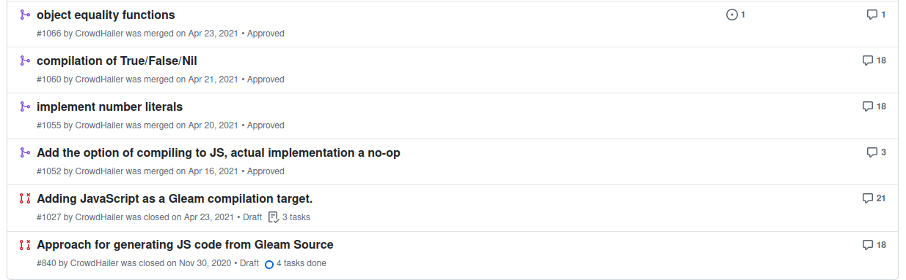
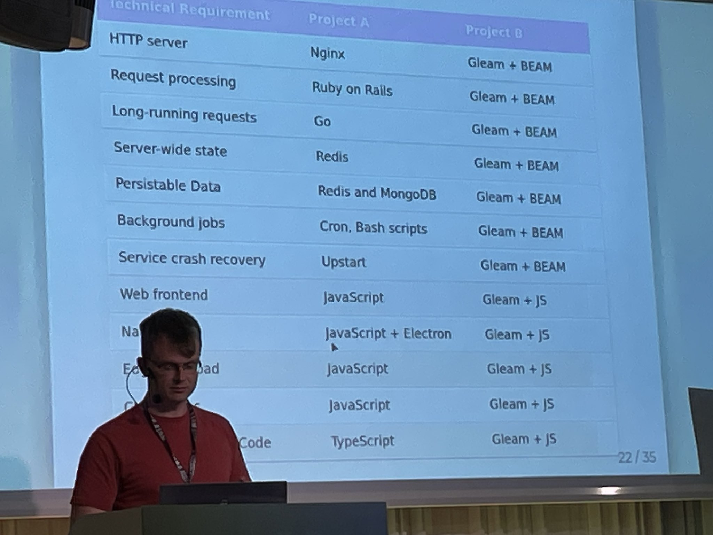

6 years with Gleam
I've been contributing to Gleam since 2018. My first commit was modest. Even at the beginning the value of functional programming was obvious to me.
Gleam describes itself as "a friendly language for building type-safe systems that scale". I couldn't agree with this quote more. That said, I do prefer the following phrasing
Early days
I was introduced to Elixir and the BEAM (the virtual machine that runs under erlang, Elixir and now Gleam) in 2014. They are a great set of stable productive technologies and I was able to get several jobs writing Elixir. I was a regular member of the Elixir meeting in London and gave several talks.
Through this community I met Louis (Gleam's creator) and got to know what he wanted to create with the language. For these first couple of years I was hacking with Gleam on occasion and continuing to work with Elixir and erlang.
Building a startup with Gleam
In the summer of 2020 I joined YCombinator with my cofounder Richard. We built our startup on Elixir and Gleam. At the time Gleam was still fresh and using Elixir for the web framework parts seemed a sensible choice but for all core logic we used Gleam.
It was quickly obvious that working in Gleam was more productive than Elixir.
This is a provocative statement but the improvement in productivity when using Gleam was not small. To be fair, it's worth clarifying the biggest value from Gleam came when the code base was changing very rapidly, which happens a lot in a startup.
Fearless refactoring is real and a type system with essentially full inference allowed us to make changes faster and try more things.
Ultimately the startup didn't work out, though there are some good tales from that time.
Gleam comes to the web
Using Gleam to build our startup was great apart from the fact I couldn't get the benefits everywhere. Because building in Gleam was so fast, 90% of my time was spent where I couldn't use Gleam, i.e. on the frontend.
For this reason I decided to work on a JavaScript target for the Gleam language. Gleam aims to be simple and this made jumping into compiler development to add the JavaScript backend an achieveable challenge.

Gleam to JavaScript shipped in June 2021.
Another Job, another country
From 2021 till 2024 I worked at Northvolt in Sweden, hoping to "make oil history". In this day job I was using Golang. For everything else I continued to choose Gleam. I built home automations, a recipe website and even another programming language, EYG using Gleam.
All the time Gleam has improved with helpful error messages, better editor integrations and the ecosystem developing. Alongside this my productivity has continued to increase.
A bright future for Gleam
I recently spoke at the Code BEAM Stockholm conference about how bright the future of Gleam is.

Using Gleam on the frontend and backend has unquestionably made my productivity higher. I continue to bet on it and have started a project that will allow me to use Gleam in place of shell scripts for build, deploy and migration tasks.
Finally
Well... I'm looking for my next opportunity.
Technology choices aren't everything but I think this one has legs. My time with Gleam has taught me a lot about leveraging better guarantees in your language to adapt to changes faster. With more iterations you get to the right answer quicker.
If you'd like to work with me please email me at peterhsaxton@gmail.com